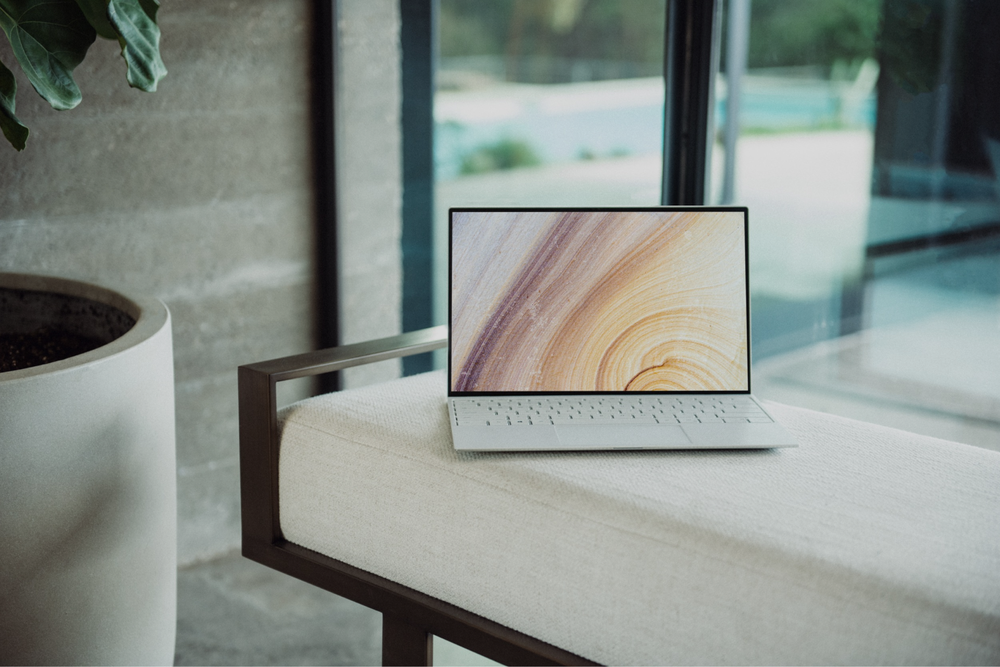

Компьютеры и будущее
Искусственный интеллект
Искусственный интеллект уже сегодня активно проникает в различные сферы нашей жизни. Однако в будущем его развитие может перевернуть наш мир. ИИ будет становиться все умнее и автономнее. Он будет использоваться в медицине для диагностики и лечения заболеваний, в автономных автомобилях для повышения безопасности дорожного движения, в образовании для обучения и даже в искусстве для создания шедевров. Только представьте себе, что ИИ сможет писать классическую музыку, которая будет нравиться широкой аудитории!
Виртуальная и дополненная реальность
Технологии виртуальной и дополненной реальности уже сегодня изменяют наше представление о взаимодействии с компьютерами. Но с развитием графических возможностей и увеличением производительности оборудования, эти технологии станут еще более захватывающими и широко применяемыми.
Виртуальная реальность позволит нам окунуться в совершенно новые миры, а дополненная реальность даст возможность взаимодействовать с цифровыми объектами в реальной среде. Это может быть полезно не только для развлечений, но и для науки. Студенты в виртуальной реальности смогут изучать то, что раньше требовало колоссальных средств.
Квантовые вычисления
Квантовые компьютеры представляют собой одну из наиболее интересных технологий будущего. В отличие от классических компьютеров, которые основаны на битах, работающих в двоичной системе (логические 0 и 1), квантовые компьютеры используют кубиты, которые могут существовать в нескольких состояниях одновременно.
Это дает им потенциальную способность решать сложные задачи, которые сегодня были бы непосильны для двоичной системы счисления. Такие машины могут находить применение в области криптографии, оптимизации, искусственного интеллекта и многих других областях науки. Производительность квантового компьютера в миллиарды раз выше, чем у обычного.
Квантовые сенсоры
Квантовые сенсоры - это еще одна интересная технология будущего. Они позволят измерять физические параметры с невероятной точностью и чувствительностью. Квантовые сенсоры могут найти применение в медицине, экологии, производстве и других отраслях, где требуется высокая точность измерений. Чувствительность квантового сенсора в миллионы раз происходит условный классический датчик.
Вместе с квантовым компьютером и искусственным интеллектом можно решать даже те задачи, которые не по силам современным суперкомпьютерам. И, опять же, это не только развлечения, но и наука, и исследования.